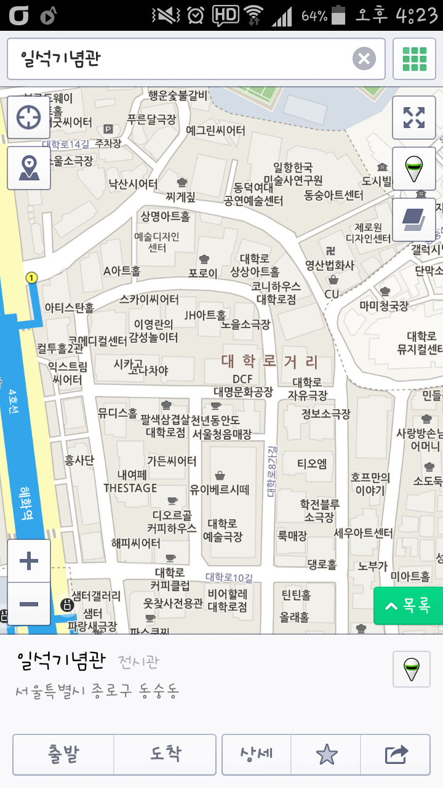

 Q10. 이 곳에서 안민원이 연주한 곡의 악기 세 가지를 고르시오 (정답 입력은 번호가 빠른 순으로 입력 예> 피콜로, 오르간, 탐탐일 경우는 062820이 아니라, 062028로 적어야 함) 현악기 01.바이올린 02.비올라 03.첼로 04.콘트라베이스 05.하프 목관악기 06.피콜로 07.플룻 08.오보에 09.잉글리시 호른 10.클라리넷 11.베이스 클라리넷 12.바순 13.콘트라 바순 타악기 14.팀파니 15.큰북 16.작은북 17.트라이앵글 18.탬버린 19.심벌즈 20.탐탐 21.실로폰 22.글로켄슈필 금관악기 23.호른 24.트럼펫 25.트럼본 26.튜바 건반악기 27.피아노 28.오르간 29.첼레스타 30.하프시코드 답변하기